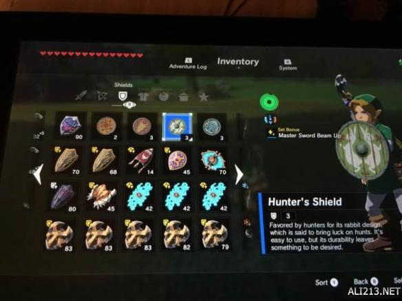
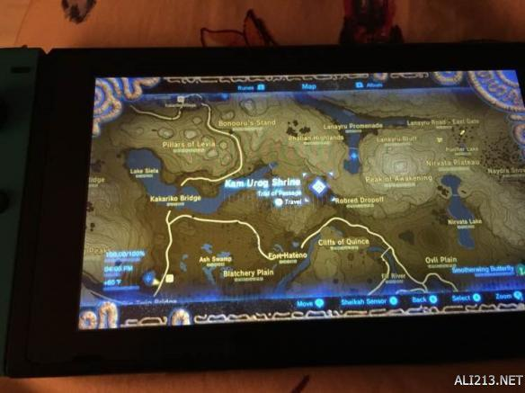
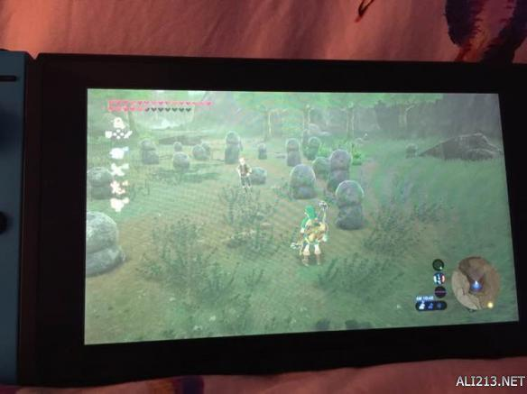
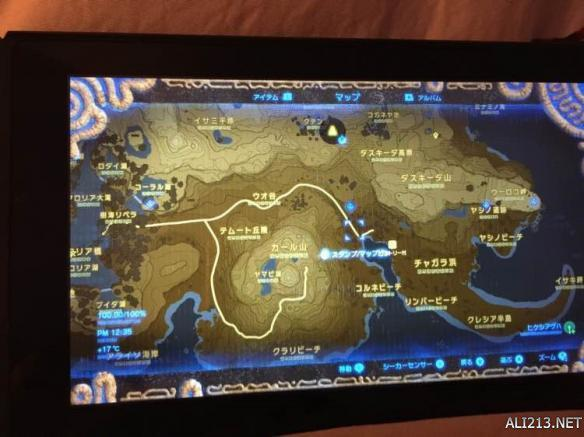
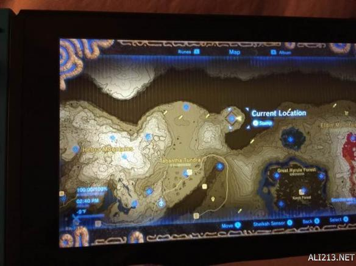
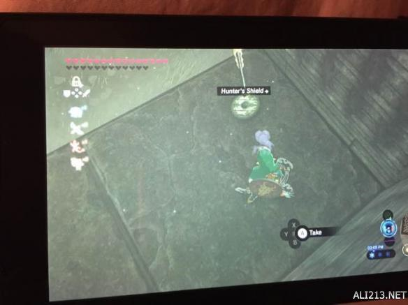

塞尔达传说荒野之息游戏中大家可以收集各种的盾牌，其中猎人盾牌和渔民盾牌位置在哪里？怎么入手呢？部分萌新可能还没找到，下面就给大家分享下渔民盾牌及猎人盾牌位置图解，一起来看下吧。
渔民盾牌及猎人盾牌位置图解
如图所示地点，都在神社附近。第一个纹章盾牌出来后右前方就是。第二个出来后左前方村子第一个屋子边就是。第三个按照图示小地图的位置就可以找到。没有实战意义就是蛮好看好玩的。





